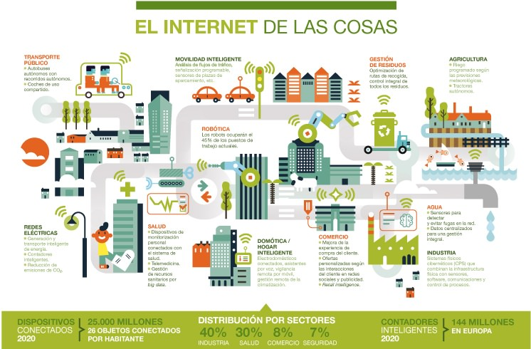

Internet de las cosas
Que es el Internet de las cosas
El Internet de las cosas (IdC) describe objetos físicos (o grupos de estos) con sensores, capacidad de procesamiento, software y otras tecnologías que se conectan e intercambian datos con otros dispositivos y sistemas a través de internet u otras redes de comunicación.1234 El Internet de las cosas se ha considerado un término erróneo porque los dispositivos no necesitan estar conectados a la Internet pública. Sólo necesitan estar conectadas a una red y ser direccionables individualmente. El siguiente enalce describe en un video mas en detalle las caracteriticas del IoT, por sus siglas en ingles Internet of Things. Qué es el internet de las cosas
Este campo ha evolucionado gracias a la convergencia de múltiples tecnologías, como la informática ubicua, los sensores, los sistemas integrados cada vez más potentes y el aprendizaje automático.7 Los campos tradicionales de los sistemas embebidos, las redes de sensores inalámbricos, los sistemas de control y la automatización (incluida la domótica y la inmótica) hacen posible, de forma independiente y colectiva, el Internet de las cosas.8 En el mercado de consumo, la tecnología IdC es más sinónimo de productos sobre el concepto de «hogar inteligente», que incluye dispositivos y aparatos (dispositivos de iluminación, termostatos, sistemas de seguridad del hogar, cámaras y otros electrodomésticos) que soportan uno o más ecosistemas comunes. Puede controlarse a través de dispositivos asociados a ese ecosistema, como los móviles y altavoces inteligentes. El IdC también se utiliza en los sistemas sanitarios.9
